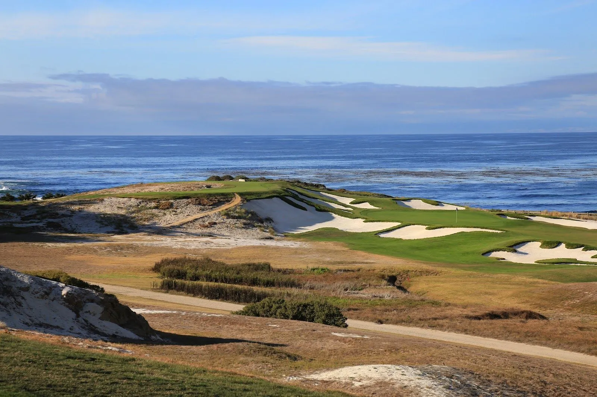
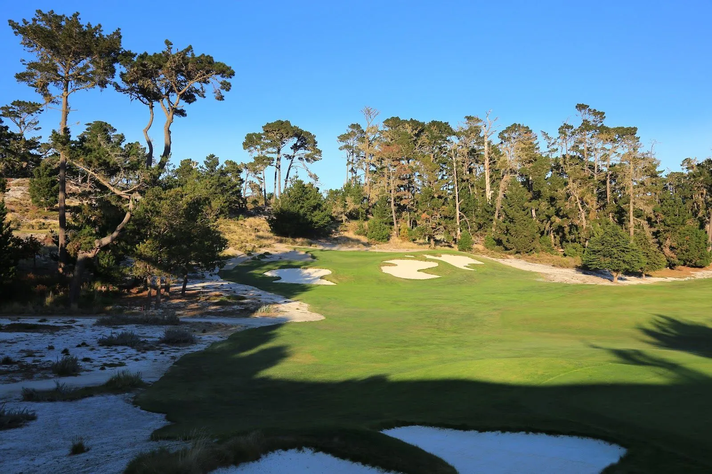

Cypress Point Club
· By GoldenPath Guide Editorial Team
At the very tip of the Monterey Peninsula, set on the windswept dunes and headlands of the Monterey Peninsula, lies a course that many consider the finest in the world. Cypress Point Club is routinely ranked number one not only in California and the United States, but on the entire planet. The catch, and every traveling golfer learns it quickly, is that you almost certainly can't play it. It's an invitation-only private club. But understanding why it's revered — and knowing where to experience the same jaw-dropping coastline — is worth a place in any California golf itinerary. On the headlands the fog burns off late in the day, and the sea keeps up its low, steady rumble behind everything.

Why it's the best
Cypress Point's genius is its setting. The course tumbles over the most dramatic seaside terrain in American golf — sweeping cliff-tops, cypress-lined fairways, protected dunes and the famous all-carry par-3 16th, played entirely over the Pacific. Alister MacKenzie's 1928 design uses the land so brilliantly that it feels less built than revealed. It's a course that combines sheer visual spectacle with genuine strategic depth, which is why it tops ranking after ranking.
The hole everyone talks about
The par-3 16th — a long iron over a churning stretch of ocean to a green tucked into the rocks — is arguably the most photographed, most discussed hole in golf. The teeing ground looks straight across a cove of crashing surf — salt on the wind, spray drifting up the cliff as the tide turns — and the shot requires a carry that changes with the wind and the tide. It's the sort of hole that defines a course, and it's the reason Cypress Point looms so large in golf's imagination.
Can a visitor play it?
No. Cypress Point is strictly private and invitation only; public tee times simply do not exist. You can admire it, watch it occasionally host a premier amateur or celebrity event, and read about it endlessly — but a round there is reserved for members and their guests.
Experience the same coastline instead
The good news is that the Monterey Peninsula has several public courses sharing the very same spectacular coast. Concentrate a visit here and you'll get a huge taste of what makes the area legendary:
- Pebble Beach Golf Links — the most famous public round in America, cliff-hugging and historic.
- Spyglass Hill — a long, demanding course threaded through the cypress and dunes.
- The Links at Spanish Bay — a windy links-style round with a famous sunset bagpiper.
- Pacific Grove Golf Links — a budget-friendly public course right on the bay, often called the "poor man's Pebble."
Getting there
Cypress Point sits between Pebble Beach and Monterey. The Pebble Beach Resort area, which encompasses all the public courses mentioned, is easily reached from Monterey or Carmel — about a two-hour drive south from San Francisco.
MacKenzie's Design & Course Numbers
Alister MacKenzie laid out Cypress Point in 1928, four years before Augusta National opened under his co-design. The scorecard reads 6,524 yards from the back tees at par 72, compact by modern standards yet demanding because wind and terrain decide everything. Roughly half the holes run through Monterey cypress and pine forest, a quarter cross protected dunes, and the final stretch rides the granite headland above the Pacific. Greens are small by modern measure, often 4,000–5,000 square feet, and most tilt toward the ocean. Caddies walk every round, and rounds stretch past four hours because the routing climbs, drops and doubles back on itself. No carts, no range warm-up theater — players walk, carry conversation, and feel every yard of elevation.
Peak Season & Peninsula Golf Costs
September and October deliver the peninsula's calmest weather, with daytime highs near 70°F (21°C) and the least fog of the year. May brings the marine layer thickest, when morning rounds start gray and clear by noon. Nearby public golf sets the budget: Pacific Grove charges roughly $60–$75 for 18 holes, Spanish Bay around $300–$350, Spyglass Hill near $400–$450, and Pebble Beach above $600 with a cart fee on top. Monterey Regional Airport sits 15 minutes from Carmel, while San Francisco International runs about a 2-hour drive north. Reserve headline tee times 6–12 months ahead; Pacific Grove often holds same-week openings for flexible travelers.
Pebble Beach Golf Links
Best Playable Courses in California
Pacific Coast Highway